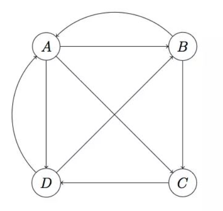

OSMnx
[toc]
OSMnx的作用
This notebook provides a quick tour of some of OSMnx's key features including how to:
- download/model street networks
- calculate stats
- visualize centrality
- impute speeds/travel times and calculate shortest path
- attach and visualize elevation data and edge grades
- download/model other infrastructure types
- download points of interest data
图或网络中的中心性
图或网络中的中心性：点度中心性、中介中心性、接近中心性、特征向量中心性、PageRank
点度中心性（degree centrality）
背后的假设是重要的节点就是拥有许多连接的节点（你的社会关系越多，你的影响力就越强）

在上面的蝴蝶结网络中，节点D的连接数是6，和网络中的所有人都建立了直接联系，其他节点的连接数都是3，因此节点D的点度中心性最高。整个网络一共有7个节点，意味着每个人最多可以有6个社会关系。因此，节点D的点度中心性是6/6=1，其他节点的点度中心性是3/6=0.5。
中介中心性（betweenness centrality）
如果一个成员位于其它成员的多条最短路径上，那么该成员就是核心成员，就具有较大的中介中心性。计算网络中任意两个结点的所有最短路径，如果这些最短路径中很多条都经过了某个节点，那么就认为这个节点的中介中心性搞
中介中心性的现实意义
- 鲍勃徘徊在两个女人之间，他贪恋爱丽丝的美丽和谈吐，亦无法舍弃卡若琳娜的乐天和无忧无虑。但他必须小心谨慎，生怕自己在其中任何一个人面前露馅，这样的关系充满了压力和焦虑
- 银行家以5%的利率接受A公司的存款，以7%的利率贷款给B公司，这样的关系给银行家带来了巨大的利益。它的前提是，市场中的A公司和B公司不能直接接触，或至少无法轻易地找到对方
鲍勃和银行家的故事尽管截然不同，但他们都处于一种被称为被禁止的三元组(forbidden triad)的关系中，需要确保三元组的末端不能直接联系。没有联系就像网络中出现了一个洞，因此也被称为结构洞。
接近中心性（closeness centrality）
点度中兴性仅仅利用了网络的局部特征，即节点的连接数有多少，但一个人连接数多，并不代表他处于网络的核心位置。接近中心性和中介中心性一样，都利用了整个网络的特征，即一个节点在整个结构中所处的位置。如果节点到图中其它节点的最短距离都很小，那么它的接近中心性就很高，相比中介中心性，接近中心性更接近几何上的中心位置
特征向量中心性（eigenvector centrality）
特征向量中心性的基本思想是，一个节点的中心性是相邻节点中心性的函数。也就是说，与你连接的人越重要，你也就越重要。
有向图和PageRank
PageRank是衡量有向网络中节点重要性的重要指标
我们将万维网抽象成有向图：（1）每个网页抽象成一个节点，假设有A、B、C、D四个节点；（2）用户通过超链接在网页之间跳转，这种跳转是有方向的（directed），从网页A跳转到网页B不代表可以从网页B链接到网页A，这种节点之间的有方向的连接被抽象成有方向的边。整个网络构成一个有向图。 
你可以很轻易地找到最受欢迎的网页。但是，PageRank的思想认为，指标最好还需要考虑到指向你的那些网页。也就是说，来自受欢迎的网页的跳转应该重于不太受欢迎的网页的跳转。这就是PageRank思想的精华，Google就是利用这一思想来给网站排名的。这里的思想依据和特征向量中心性其实是一致的。
小结
- 点度中心性：一个人的社会关系越多，他/她就越重要
- 中介中心性：如果一个成员处于其他成员的多条最短路径上，那么该成员就是核心成员
- 接近中心性：一个人跟所有其他成员的距离越近，他/她就越重要
- 特征向量中心性：与你连接的人社会关系越多，你就越重要
- PageRank：来自受欢迎的网页的跳转应该重于不太受欢迎的网页的跳转